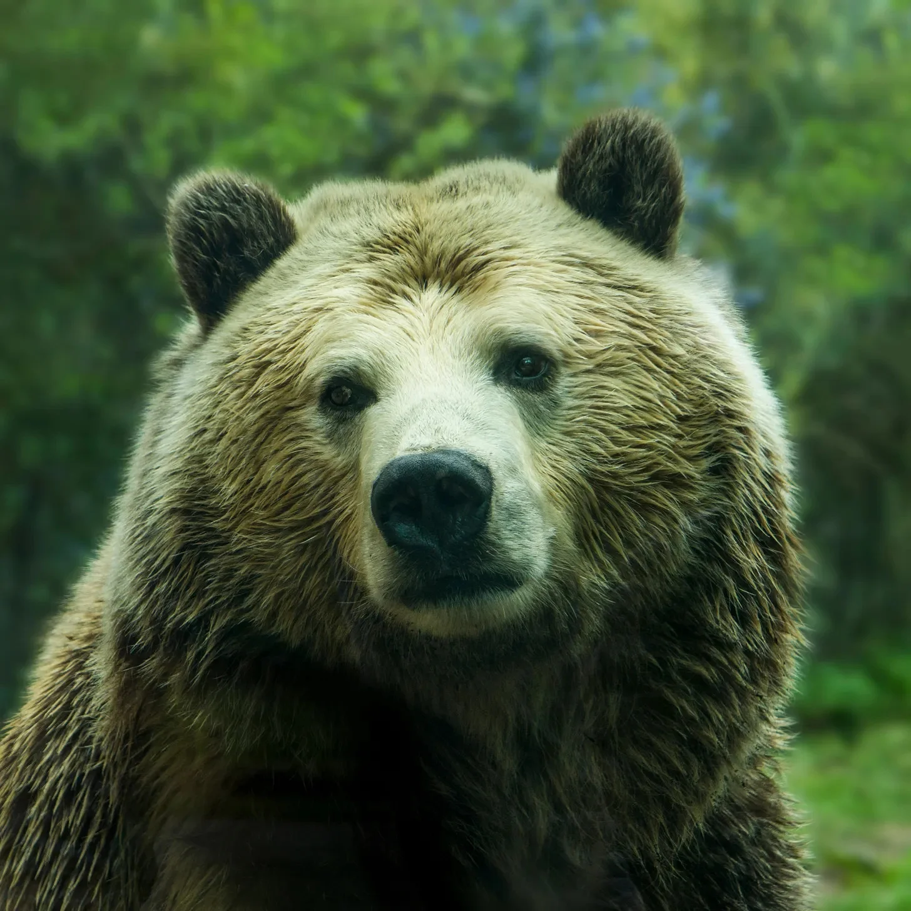

곰과 눈이 마주치는 순간, 내가 캠핑 여행을 망쳤다는 걸 알았다. 그 곰은 모든 사람들의 헛소리에 지친 것 같았다. 야생 동물에게서 기대할 법한 눈빛이 아니었다. 배고프고 살의에 찬, ‘지금 당신을 먹으려는’ 그런 눈빛이 아니었다. 아니. 이 곰은 마치 길고 실망스러운 하루의 끝에, 내가 바보들로 가득 찬 세상에서 또 하나의 바보일 뿐이라는 듯이 나를 쳐다봤다.
[I knew I’d fucked up the camping trip the moment I made eye contact with a bear who seemed done with everyone’s bullshit. It wasn’t the kind of eye contact you’d expect from a wild animal—a hungry, murderous, 'I’m-about-to-eat-you’ glare. No. This bear looked at me like it was the end of a long, disappointing day, and I was just one more idiot in a world full of idiots.]
솔직히 말해서, 나는 그 곰을 탓할 수 없었다. 내가 그 곰의 입장이었다면, 아마도 나 자신을 똑같은 방식으로 바라봤을 것이다. 여기 나는 그래놀라 바와 하이킹에 전혀 적합하지 않은 부츠를 신고 숲 한가운데 서서, 마치 내가 뭘 하고 있는지 알기나 하는 것처럼 곰을 바라보고 있었다. 사실, 나는 아무것도 몰랐다. 450킬로그램의 회색곰이 묵묵히 나를 판단하는 그 순간만큼 내가 더 무능하게 느껴진 적은 없었다.
[And I’ll be honest, it wasn’t like I could blame the bear. If I were in its place, I’d probably look at me the same way. Here I was, standing in the middle of the woods with a granola bar and a pair of boots that were absolutely not built for hiking, staring back at it like I had a single clue what I was doing. Which, I didn’t. I had never been more out of my depth than in that moment, with the silent judgment of a thousand-pound grizzly bearing down on me.]
나는 그 자리에 얼어붙어 서 있었다. 무서워서가 아니었다—물론, 무섭기는 했지만, 그 이상이었다. 그 곰은 알겠지? 뭔가를 겪어본 듯한 표정이었다. 마치 수많은 멍청한 캠퍼들과 더 멍청한 관광객들을 겪어왔고, 이제 나를 보며 “정말? 오늘 내가 이런 걸 상대해야 해? 진심이야?"라고 말하는 것 같은 표정이었다.
[I stood there, frozen. Not because I was scared—I mean, okay, I was scared, but it was more than that. The bear had this look, you know? Like it had seen some shit. Like it had been through its share of dumb campers and even dumber tourists, and now it was looking at me like, "Really? This is what I’m dealing with today? Seriously?”]
나는 움직일 수가 없었다. 내 뇌가 멈춰버렸다. 할 수 있는 건 그저 곰을 응시하며 내가 어떻게 여기까지 오게 됐는지 생각하는 것뿐이었다. 아, 맞다. 브래드 때문이었지.
[I couldn’t move. My brain had shut down. All I could do was stare back and think about how I’d gotten here in the first place. Oh, right. Brad.]
“야, 넌 좋아할 거야. 자연이고, 원시적이고, 말 그대로… 영적인 거라고."라고 말하던 브래드 말이다. 내가 캠핑을 한 번도 해본 적 없다고 실수로 말한 것 때문에 나를 여기로 거의 끌고 온 브래드 말이다. 브래드의 세계에서 그건 용서할 수 없는 죄였나 보다. "캠핑을 한 번도 안 해봤다고? 무슨 소리야?"라고 그가 말했었다. 마치 내가 뭔가 어둡고 부끄러운 비밀을 고백한 것처럼. 마치 우리 우정의 운명이 내가 눈썹을 태우지 않고 불을 피울 수 있느냐에 달려 있는 것처럼 말이다. 그래서 여기 나는 숲 한가운데 있게 됐다. 통신도 안 되고 내가 뭘 하고 있는지도 전혀 모르는 채로.
[Brad, with his "Dude, you’ll love it, it’s nature, it’s primal, it’s like… spiritual, man.” Brad, who had practically dragged me out here because I’d made the mistake of mentioning I’d never been camping before. Apparently, that was an unforgivable sin in Brad’s world. “What do you mean you’ve never been camping?” he’d said, like I’d confessed to some dark, shameful secret. Like the entire fate of our friendship hinged on whether or not I could light a fire without burning my eyebrows off. So here I was, in the middle of the woods, with no cell service and absolutely no idea what I was doing.]
물론 지금 브래드는 어디에도 없었다. “야생 베리를 찾으러” 갔다나 뭐라나, 아마 서바이벌 쇼에서 본 그런 말도 안 되는 짓을 하러 간 거겠지. 당연히 이 곰은 내가 혼자 있을 때 나타나기로 했다. 내 인생이 그렇게 돌아가니까. 전형적이지. 뭐가 더 모욕적인지 결정할 수가 없었다. 거대한 곰과 마주하고 있다는 사실인지, 아니면 그 곰이 나에게 전혀 관심이 없어 보인다는 사실인지. 마치 지루해하는 것 같았다. 마치 내가 노력할 가치도 없다는 듯이.
[Except now, of course, Brad was nowhere to be found because he’d gone off to “forage for wild berries” or some other ridiculous thing he’d probably seen on a survival show. And naturally, this bear decided to show up when I was alone, because that’s just how my life works. Typical. I couldn’t decide what was more insulting—the fact that I was face-to-face with a giant bear, or the fact that the bear looked like it wasn’t even interested in me. Like it was bored. Like I wasn’t worth the effort.]
곰이 콧김을 내뿜었다. 으르렁거리거나 무서운 소리는 아니었다. 아니, 오히려 한숨 같았다. 알잖아, 긴 하루가 끝나갈 때 직장 동료가 정말 바보 같은 질문을 하면 제대로 대답하기도 귀찮은 그런 느낌. 그게 바로 이 곰의 표정이었다. 지쳐 보였다. 마치 열 번의 인생을 살아도 모자랄 만큼 멍청한 인간들을 봐왔고, 이제 나는 그저… 거기 있었다. 인생의 큰 그림에서 또 하나의 잘못된 선택일 뿐.
[The bear huffed, but not in a growl or anything scary. No, it was more like a sigh. You know, like when someone at work asks you a really stupid question at the end of a long day and you can’t even be bothered to respond properly. That’s what this bear looked like. Tired. Like it had seen enough dumb humans in its time to last ten lifetimes, and now I was just… there. Another poor life choice in the grand scheme of things.]
곰의 거대한 머리가 살짝 기울어졌다. 마치 나를 관찰하는 것 같았다. 나는 곰이 이렇게 생각하고 있을 거라고 상상했다. “이놈과 정말 상대해야 하나? 별로 좋은 먹잇감은 아닌데. 내가 먹어본 것들 중에 이놈보다 더 나은 선택을 한 것들도 있었을 텐데.” 나는 철저히 평가받는 기분이었다. 내 손에 있던 그래놀라 바를 힘없이 흔들었다. 마치 화해의 제스처처럼.
[Its massive head tilted slightly, like it was studying me. I imagined it thinking, “Do I really want to bother with this one? He’s not exactly prime real estate. I mean, I’ve probably eaten things that made better decisions than him.” I felt judged. Thoroughly. I waved the granola bar in my hand half-heartedly, like it was some kind of peace offering.]
“저기, 음… 이거 먹을래요?” 내가 떨리는 목소리로 물었다. 나는 정말, 정말로 곰이 내가 하려는 말을 이해하기를 바랐다. 지금 생각해보면, 그건 “제발 날 죽이지 마세요"라는 말 이상도 이하도 아니었지만.
["You, uh… you want this?” I asked, my voice shaky. I was really, really hoping it understood what I was trying to say, which, now that I think about it, wasn’t much more than “Please don’t kill me.”]
곰은 움직이지 않았다. 눈 하나 깜짝하지 않았다. 당연히 그랬다. 곰이 그래놀라를 먹는지도 확실치 않았지만, 내게는 선택의 여지가 많지 않았다. 시간이 천천히 흘렀고, 나는 땀을 흘리기 시작했다. 더워서가 아니었다. 아니, 이건 순수한 공포의 땀이었다. 목 뒤에서 시작해 척추를 따라 흐르는 그런 종류의 땀. 마치 불안으로 만든 젖은 담요에 감싸인 것 같은 기분이 들게 했다.
[The bear didn’t move. It didn’t even flinch. Of course it didn’t. I wasn’t even sure bears ate granola, but it wasn’t like I had a lot of options. The seconds dragged on, long enough for me to start sweating, but not from the heat—no, this was straight-up panic-sweat. That kind that starts at the back of your neck and rolls down your spine, making you feel like you’ve been wrapped in a wet blanket of anxiety.]
그리고 물론, 내 뇌가 최악의 타이밍을 가지고 있기 때문에, 바로 이 순간 나를 여기로 이끈 모든 결정들에 대해 의문을 품기 시작했다. 왜 이 바보 같은 캠핑 여행에 동의했지? 왜 그냥 볼링이나 영화 보기 같은 평범한 걸 제안하지 않았을까? 어떻게 내가 이렇게 숲속으로 끌려오게 됐지? 여기서는 곰들이 돌아다니면서 사람들을 판단하는데, 마치 이상한 야생판 리얼리티 쇼라도 되는 것처럼.
[And of course, because my brain has the worst possible timing, this is the exact moment I start questioning every single decision that led me here. Why did I agree to this stupid camping trip? Why didn’t I just suggest something normal, like bowling or a nice movie night? How did I let myself get talked into the woods, where bears apparently hang out and judge people like they’re on some weird wilderness version of a reality show?]
주머니 속 휴대폰이 진동했다. 잠시 실존적 위기에서 벗어나게 해줬다. 바보처럼, 나는 휴대폰을 확인했다.
브래드였다. 그가 베리 사진을 보내왔다. “야, 내가 뭘 찾았는지 봐! 자연의 간식 바야!”
[My phone buzzed in my pocket, pulling me out of my existential crisis for a second. Like an idiot, I checked it.
It was Brad. He’d texted me a picture of some berries. “Dude, look what I found! Nature’s snack bar!”]
나는 그 뻔뻔함을 이해하려고 5초 동안 화면을 뚫어지게 쳐다봤다. 브래드는 저 밖에서 산악인처럼 베리를 먹으며 최고의 시간을 보내고 있는데, 나는 여기서 곰의 먹이가 될 참이었다.
[I stared at the screen for a solid five seconds, trying to process the sheer audacity of it. Brad was out there living his best life, munching on berries like some kind of mountain man, while I was here, about to get turned into bear food.]
나는 곰과 계속 눈을 마주친 채로 휴대폰을 주머니에 도로 집어넣었다. 내가 착각하는 게 아니라면, 곰이 실제로 눈을 굴렸다. 맞다. 곰이 나를 보고 눈을 굴렸다. 내 인생이 공식적으로 새로운 최저점을 찍었다.
[I shoved the phone back into my pocket, all while maintaining eye contact with the bear, who, if I wasn’t mistaken, actually rolled its eyes at me. That’s right—a bear rolled its eyes at me. My life had officially hit a new low.]
“아, 정말 대단하군,” 나는 작은 목소리로 중얼거렸다. 솔직히, 달리 뭐라고 말할 수 있겠는가?
[“Well, that’s just great,” I muttered under my breath. Because really, what else was there to say?]
곰은 천천히 눈을 깜빡였다. 마치 내게 마지막 기회를 주는 것처럼 보였다. 그러더니 몸을 돌려 나무 사이로 느릿느릿 걸어갔다. 서두르는 기색도 없이. 그저 여유롭게 걸어가는 모습이, 마치 내가 더 이상 시간 낭비할 가치도 없다는 듯했다. 마치 어딘가 더 나은 곳에 갈 일이 있는 것처럼 보였는데, 솔직히 나도 반박할 수 없었다. 내가 곰이었어도 나 같은 사람 주변에 머물고 싶지 않았을 것이다.
[The bear blinked slowly, like it was giving me one last chance to get my shit together, before turning around and lumbering off into the trees. Not even in a hurry. Just casually strolling away, like I wasn’t worth any more of its time. Like it had somewhere better to be, which honestly, I couldn’t even argue with. If I were the bear, I wouldn’t want to hang around me either.]
곰이 사라지자마자, 내 다리는 드디어 다시 움직일 수 있다고 결정한 듯했고, 나는 안도감과 완전한 탈진의 혼합 상태로 땅에 주저앉았다. 온몸의 모든 근육이 짜내어지고 말린 것 같은 느낌이었다. 여전히 내 손에 꼭 쥐고 있던 그래놀라 바는 이제 더욱 초라해 보였다.
[As soon as it was gone, my legs finally decided they worked again, and I slumped to the ground in a mix of relief and total exhaustion. Every muscle in my body felt like it had been wrung out and left to dry. The granola bar, still clutched in my hand, looked even more pathetic now.]
나는 그래놀라 바를 까서 한 입 베어 물고는 곰이 사라진 나무들 사이를 멍하니 바라보았다.
자연의 간식 바라고? 웃기는 소리.
[I unwrapped it, took a bite, and stared off into the trees where the bear had disappeared.
Nature’s snack bar, my ass.]